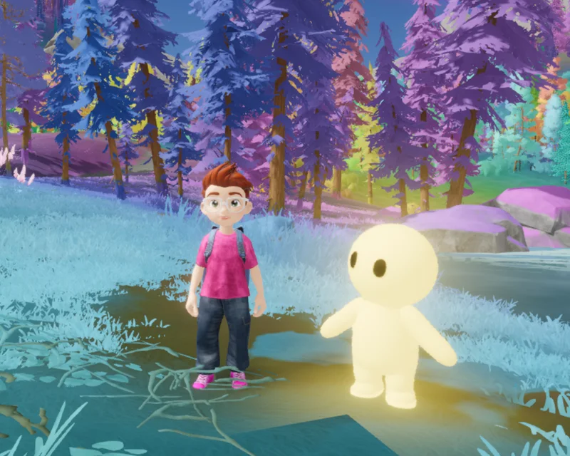
En test aujourd'hui
Enfants
4 à 8 ans
Univers pastel, doux et arrondi. Les images avant les mots.
Un jeu narratif sur les émotions
with Glow
L'endroit pour déposer, explorer et traverser ce qui se passe à l'intérieur.
Un compagnon émotionnel, pour toute une vie, de 4 à 99 ans.
Dans le jeu : l'îlot au soleil, avec Glow
Le concept
Dans L'astrée, on retrouve Glow sur son îlot, on choisit ce qu'on ressent, et on vit une petite histoire autour de cette émotion. L'univers s'adapte à l'âge, au moment et à l'énergie de chacun.
Les enfants n'ont pas toujours les mots. Les adolescents n'osent pas parler. Les adultes ne prennent plus le temps d'écouter leurs émotions. Les seniors sont parfois isolés. L'astrée donne à chacun un endroit à soi.

Glow
Un compagnon lumineux, doux, espiègle et bienveillant. Glow ne juge jamais, ne presse jamais. Il accompagne sans expliquer.
Glow ne change jamais : le même compagnon, à chaque âge de la vie.
Un univers pour chaque âge

Univers pastel, doux et arrondi. Les images avant les mots.
Ambiance introspective et narrative, pour ce qui ne se dit pas à voix haute.
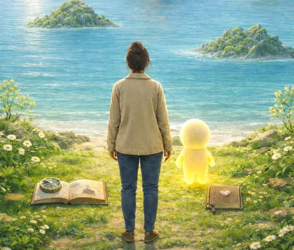
Un espace de calme réaliste, pour renouer avec sa vie intérieure.
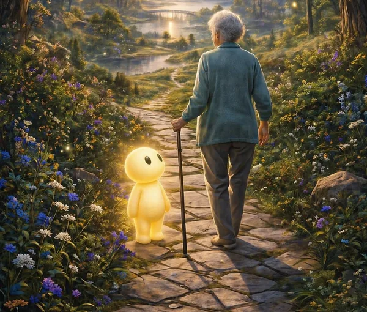
Réalisme poétique, lumière mémoire, douceur du souvenir.
Aujourd'hui
Pour les 4 à 8 ans, sur Android. La joie et le calme se vivent sur l'îlot, avec Glow. La tristesse, la colère et la peur ouvrent chacune une histoire :
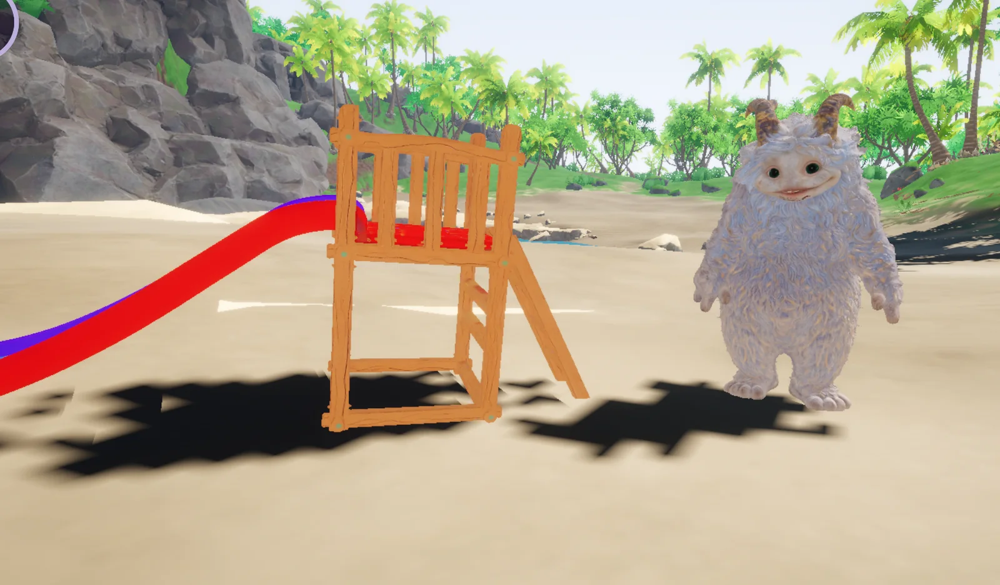
Sur la plage, on aide Fluffy à reconstruire son toboggan.
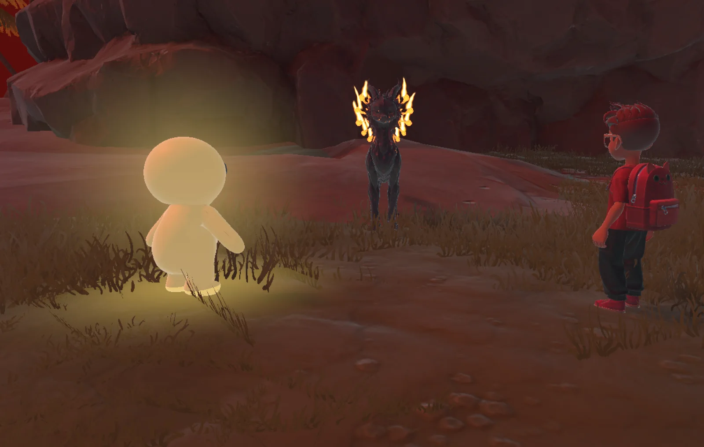
Luminaris, un grand renard étoilé, et un feu à apaiser.
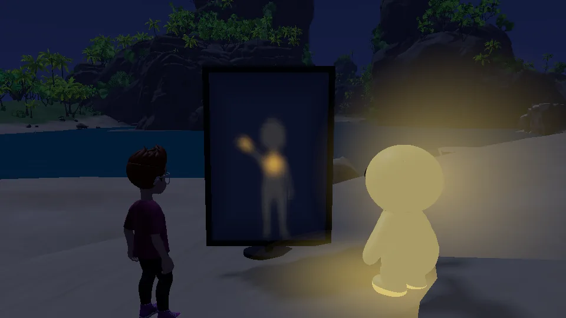
La nuit, un miroir, et une ombre qui n'est pas celle qu'on croit.
Chaque émotion a sa façon d'être vécue. Pour l'instant, la plupart passent par une quête, le temps que les autres prennent forme.
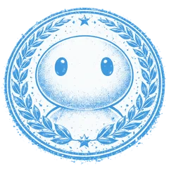
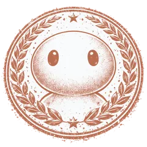
Chaque moment vécu donne un badge, rangé dans le Carnet du joueur.
Les émotions
L'astrée propose une palette d'émotions adaptée, qui s'élargit avec l'âge.
Ouvrent une promenade libre avec Glow.
Ouvre un échange où Glow propose des pistes adaptées.
Toujours une réponse valable : Glow accompagne alors l'exploration.
La météo de l'îlot
Avant d'arriver sur l'îlot, on choisit le temps qu'il y fera. Une façon simple de dire comment on se sent, et l'îlot change avec elle.
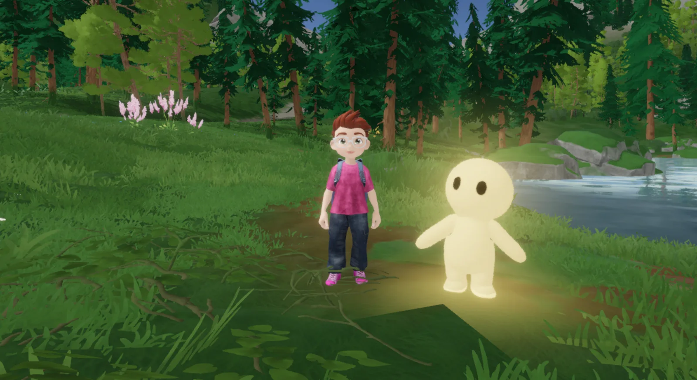
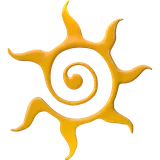
Soleil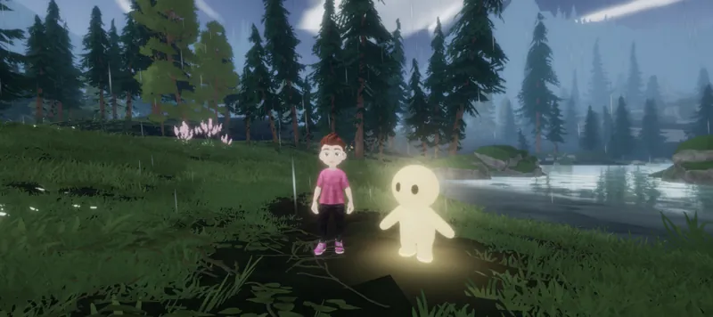
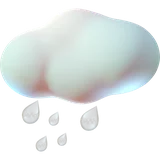
Pluie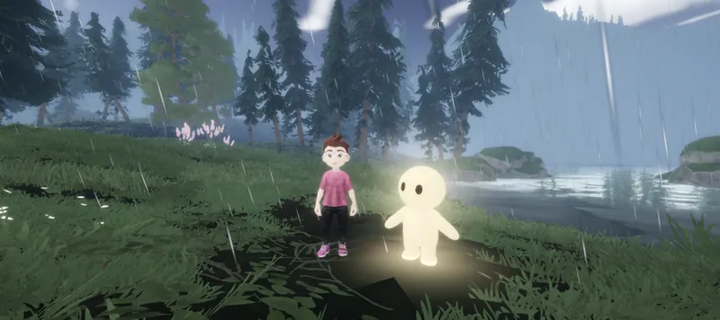
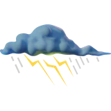
Orage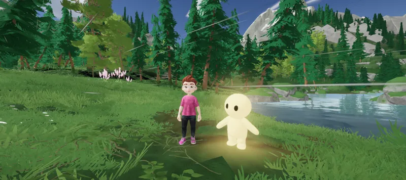
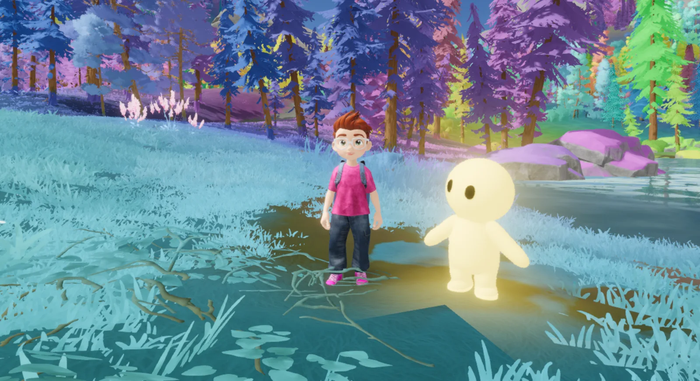
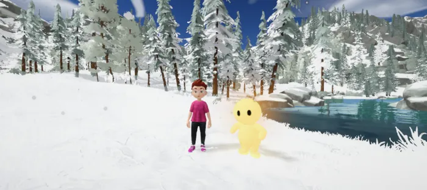
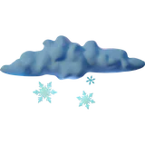
Neige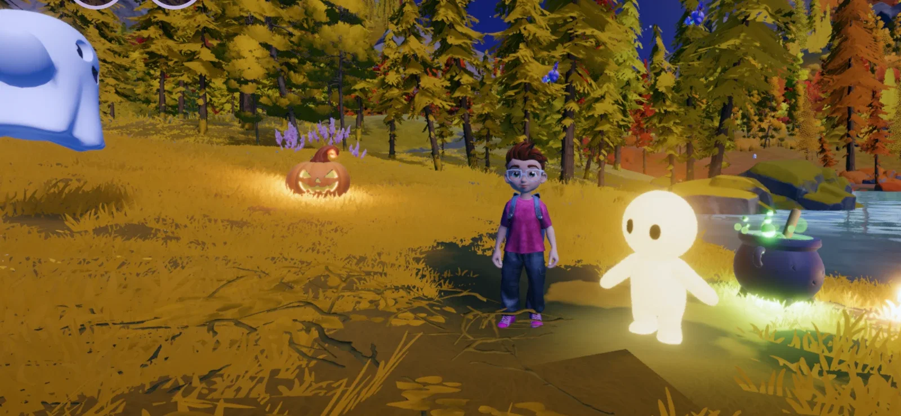
La boucle
Celle de son îlot, un langage simple, accessible à tout âge.
Son cocon personnel, où Glow attend.
Celle du moment, sans pression.
Il nous accompagne vers une quête, une simple promenade, ou un échange.
Vivre l'émotion dans une petite histoire.
Une phrase de Glow pour la suite, puis un badge dans le Carnet.
Votre îlot
Pour donner le ton de l'ambiance.
Un espace à soi, qui vous ressemble.
Adaptées à votre âge, pour mettre en mouvement ce qui est là.
Des histoires vécues avec Glow, qui nous accompagne.
Vos badges et votre cheminement.
Pour les plus grands : privé, verrouillé, rien qu'à vous.
En tête-à-tête : on lui dit ce qu'on a sur le cœur, il écoute, et il répond.
Pour les familles
Pendant le test, et pour les plus jeunes.
Aujourd'hui, L'astrée est gratuite pour les familles qui la testent. Plus tard, il y aura plusieurs formules : une partie gratuite, un abonnement pour accéder à toutes les quêtes, et une formule pour toute la famille. Elles se prendront par le Play Store, avec un compte et une adresse e-mail.
La version des 4 à 8 ans n'aura jamais de publicité.
Si l'enfant ou l'adolescent rejoue plusieurs fois la même quête, ses parents pourront en être informés : un signal discret pour ouvrir le dialogue, jamais pour surveiller.
Derrière L'astrée
L'astrée est née d'une conviction simple : à tout âge, chacun mérite un endroit à soi pour ce qu'il ressent. Je la construis seule, de l'idée jusqu'au code, avec exigence et avec tendresse.
Mais L'astrée est plus grande qu'une seule personne. J'espère réunir peu à peu une équipe qui en partagera l'esprit : la bienveillance, la justesse et l'attention au détail.
Vous pouvez aussi m'aider à améliorer le jeu : une case à cocher au départ, ou dans les paramètres, m'envoie quelques statistiques sur les étapes jouées, jamais le prénom ni la date de naissance. Si cela vous inquiète, tout est expliqué sur la page Confidentialité.
Audrey Frison, créatrice de L'astrée